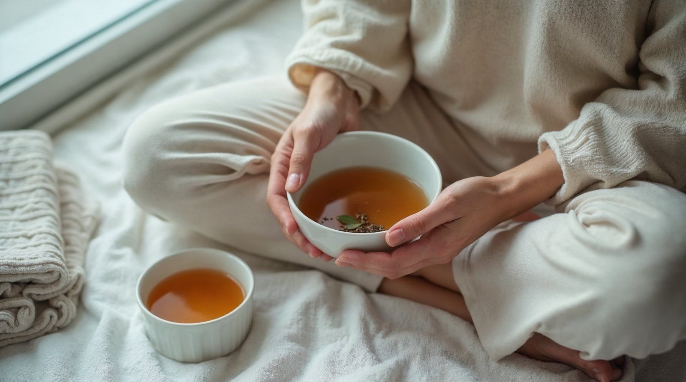
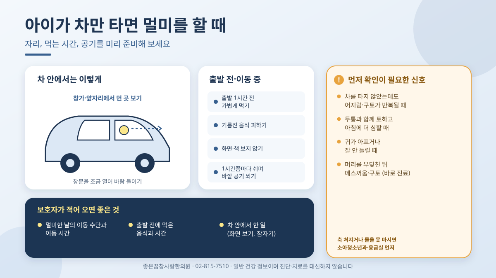

이종호 한의사 감수좋은꿈참사랑한의원 대표원장 (한의사 면허번호 19769)발행 2026-11-23 · 수정 2026-11-26
이 글의 차례
아이가 차만 타면 멀미를 하는 것은 눈으로 보는 움직임과 귀 안쪽이 느끼는 흔들림이 서로 맞지 않을 때 생기는 경우가 많아, 앉는 자리와 시선, 출발 전 식사, 차 안 공기를 먼저 살피고 이동 전에 미리 준비합니다.
할머니 댁에 가는 길이나 체험학습 버스에서 아이가 창백해지며 토할 것 같다고 하면 부모님도 긴장하게 되고, 명절 귀성길이 다가오면 자주 듣는 고민입니다.
왜 이런 불편이 생길 수 있나요
- 차 안에서 책이나 화면을 보면 눈은 멈춰 있는데 몸은 흔들려 어지럼이 커집니다.
- 기름진 음식으로 배가 부르거나 빈속이면 메스꺼움이 더 쉽게 옵니다.
- 환기가 안 되는 더운 차 안, 강한 방향제 냄새도 멀미를 부추깁니다.
- 한의학에서는 아이의 소화와 예민함, 평소 어지럼도 함께 살핍니다.
- 전날 잠을 설쳤거나 피곤한 날 멀미가 더 쉽게 온다는 아이도 있습니다.
먼저 이렇게 여쭙니다
- 차에 탄 지 얼마 만에 멀미를 하나요?
- 차 안에서 휴대폰이나 책을 보나요?
- 출발 전에 무엇을, 얼마나 먹나요?
- 버스, 지하철, 배에서도 멀미를 하나요?
- 멀미를 한 뒤 회복하는 데 얼마나 걸리나요?

일상에서 먼저 해 볼 수 있는 것
- 버스는 앞쪽 창가, 승용차는 뒷좌석에 앉혀 창밖 먼 곳을 보게 하기(어린이는 앞좌석에 앉히지 않고 나이에 맞는 카시트·안전띠)
- 차 안에서 화면이나 책 보지 않기
- 출발 1시간 전 가볍게 먹고 기름진 음식 피하기
- 창문을 조금 열어 신선한 공기 들이기
- 긴 이동에는 1시간쯤마다 쉬면서 바깥 공기 쐬기

한의원에서 함께 살필 수 있는 경우
- 멀미가 심해 외출을 꺼리는 아이의 경우 소화와 몸의 예민함을 함께 살핍니다.
- 평소 어지럼이나 두통이 잦은 경우 함께 여쭙니다.
- 이동 전에 미리 준비할 수 있는 방법을 함께 정리합니다.
좋은꿈참사랑한의원에서는 멀미가 생기는 상황과 아이의 평소 소화를 보호자에게 먼저 듣고, 진맥을 기본으로 하고 필요하다고 판단될 때 복진 같은 방법을 더해 아이의 몸 상태를 살핀 뒤 아이의 나이와 상태에 맞는 방법을 함께 정합니다. 긴 이동을 앞두고 있다면 일정을 미리 알려 주세요.
이렇게 기록해 오시면 상담이 쉬워집니다
- 멀미를 한 날의 이동 수단과 이동 시간
- 출발 전에 먹은 음식과 시간
- 차 안에서 한 일(화면 보기, 잠자기 등)
- 차를 타지 않을 때도 어지럽거나 머리가 아픈지
이런 증상은 먼저 확인이 필요합니다
- 차를 타지 않았는데도 어지럼과 구토가 반복되는 경우
- 두통과 함께 토하고 아침에 더 심한 경우
이런 신호가 있으면 한의원보다 가까운 병원이나 응급실을 먼저 찾으세요.

여쭙는 것
- 차에 탄 지 얼마 만에 멀미를 하나요?
- 차 안에서 휴대폰이나 책을 보나요?
- 출발 전에 무엇을, 얼마나 먹나요?
생활에서 해 볼 것
- 버스는 앞쪽 창가, 승용차는 뒷좌석에 앉혀 창밖 먼 곳을 보게 하기(어린이는 앞좌석…
- 차 안에서 화면이나 책 보지 않기
- 출발 1시간 전 가볍게 먹고 기름진 음식 피하기
한의원에서 함께 살필 것
- 멀미가 심해 외출을 꺼리는 아이의 경우 소화와 몸의 예민함을 함께 살핍니다.
- 평소 어지럼이나 두통이 잦은 경우 함께 여쭙니다.
- 이동 전에 미리 준비할 수 있는 방법을 함께 정리합니다.
먼저 확인이 필요한 신호
- 차를 타지 않았는데도 어지럼과 구토가 반복되는 경우
- 두통과 함께 토하고 아침에 더 심한 경우
한눈에 보는 표
| 구분 | 핵심 |
|---|---|
| 여쭙는 것 | 차에 탄 지 얼마 만에 멀미를 하나요? 차 안에서 휴대폰이나 책을 보나요? |
| 생활에서 해 볼 것 | 버스는 앞쪽 창가, 승용차는 뒷좌석에 앉혀 창밖 먼 곳을 보게 하기(어린이는 앞좌석에 앉히지 않고 나이에 맞는 카시트·안전띠) 차 안에서 화면이나 책 보지 않기 |
| 한의원에서 함께 살필 것 | 멀미가 심해 외출을 꺼리는 아이의 경우 소화와 몸의 예민함을 함께 살핍니다. 평소 어지럼이나 두통이 잦은 경우 함께 여쭙니다. |
| 먼저 확인이 필요한 신호 | 차를 타지 않았는데도 어지럼과 구토가 반복되는 경우 두통과 함께 토하고 아침에 더 심한 경우 |
자주 묻는 질문
멀미약을 먹여도 되나요?
나이에 따라 쓸 수 있는 약이 다르니 약사나 소아청소년과와 상의하세요.
크면 나아지나요?
나이가 들며 덜해지는 아이가 많습니다. 그 전까지는 이동 환경을 바꿔 주는 것이 도움이 됩니다.
기차나 지하철에서도 멀미를 하는데 괜찮나요?
진행 방향을 보고 앉고 창밖 먼 곳을 보게 하면 덜한 경우가 많습니다. 차를 타지 않아도 어지럽다면 진료를 받으세요.
멀미할 때 무엇을 먹이면 좋나요?
메스꺼울 때는 억지로 먹이지 말고, 가라앉은 뒤 물이나 담백한 음식을 조금씩 주세요.
좋은꿈참사랑한의원은 재진 때 지난번 이야기부터 이어서 여쭙니다. 진료시간과 예약은 오시는 길에서 확인하세요.
어디서 상담받을 수 있나요?
좋은꿈참사랑한의원은 서울 동작구 만양로2길 2 신성빌딩 3층·5층(서울 동작구 상도동, 7호선 상도역 3번 출구 근처)에 있습니다. 한의사 3명(이종호 대표원장, 조영기 수석진료원장, 정원영 진료원장)이 진료합니다. 진료시간은 평일 09:30~20:00(점심 13:00~14:00), 토·일·공휴일 09:30~15:00이며, 방문 전 전화로 확인을 권합니다. 예약은 네이버 예약, 카카오톡 상담, 전화 02-815-7510로 받습니다.
이 글은 일반적인 건강 정보이며 개인의 진단이나 치료를 대신하지 않습니다. 증상이 있거나 복용 중인 약이 있다면 진료를 통해 확인하세요. 치료 효과는 개인마다 다를 수 있습니다.
작성 기준: 일반적으로 알려져 있는 건강 정보를 참고해 정리했습니다(대표원장 감수). 증상 기록은 1~2주 동안 하루 1회, 비슷한 시간에 적어 오시면 지난 상태와 비교하기 쉽습니다.